Engineered Solutions
Hundreds of automation installations across Thailand since 2008.
History
Foster Engineering Co., Ltd. was founded in 2008 with a starting staff of just 5 people.
Initially serving the food and beverage industry with process automation, we have since expanded into pharmaceutical, chemical, brewing and government infrastructure, with hundreds of installations operating successfully throughout Thailand.
Our engineered solutions are delivered using products from leading international manufacturers, combined with our professional engineering services. These services are carried out by highly trained and experienced engineers led by qualified Project Managers. Foster engineers have diverse backgrounds, disciplines and skills, giving them and us a unique level of knowledge and experience to meet and fulfill customer requirements.
An associated company located in Brazil, Process Automation do Brasil, serves the South.
Industries we serve
Technologies we work with


IT/OT Integration
Connect plant-floor data from PLC and SCADA to business systems, securely.
Learn more

Our customers
Ready to get started?
Talk to our engineers about your project.
0-2989-4867 · foster.engineering@gmail.com
What is IT/OT integration?
It connects the systems that run physical processes (OT) with the systems that handle data and business decisions (IT), so information flows in real time across the whole company. Data from PLCs, HMIs and SCADA reaches planners, managers and maintenance teams when they need it.
IT
Data and business systems: ERP, databases, reporting, networks.
OT
Control of physical processes: PLCs, HMIs, SCADA, drives, sensors.
A common reference architecture: the Purdue Model
Select a level to see what runs there.
Level 4-5 · Enterprise and business
ERP, MES, historians and reporting. Business decisions are made here using plant data.
Related Foster work: redundant SQL database server (Unilever)
Level 3.5 · Industrial DMZ
A buffer zone between IT and OT: firewalls, jump servers and data relays. Data passes through it; direct connections across it are avoided.
Level 3 · Operations
SCADA stations, engineering workstations and local historians. Common protocols: OPC UA, MQTT, Modbus TCP.
Related Foster work: SCADA with Wonderware Intouch, iFIX and FTView
Level 2 · Supervisory control
SCADA servers, HMI stations and batch or recipe control that supervise the process.
Related Foster work: Wonderware Inbatch recipe control; Siemens, Omron, Mitsubishi and Pro-face HMI
Level 1 · Process control
PLCs and RTUs that run the control logic and talk to the field devices.
Related Foster work: PLC systems from Siemens, Allen-Bradley, Omron and Mitsubishi
Level 0 · Field devices
Sensors, actuators, drives and motors that touch the physical process.
Related Foster work: servo and drive migration (Yaskawa servo, GE Drive)
Benefits
Real-time visibility
See what is happening on the plant floor without waiting for manual reports.
Lower cost
Automation and predictive maintenance help reduce downtime and waste.
Better KPIs
Measure output, quality and energy with accurate data from the source.
One data platform
Bring data from many machines and systems into one place.
Challenges to plan for
Cybersecurity
Connecting OT to IT enlarges the attack surface, so the connection must be designed with security first.
Legacy equipment
Older controllers may lack modern interfaces or security features.
Protocol mismatch
OT and IT systems speak different languages and need gateways or a common data layer.
Teams and skills
IT and OT teams work differently. Shared goals and clear ownership are needed.
Common industrial protocols
Modbus TCP
Simple and widespread, but legacy and unencrypted.
OPC UA
Modern, multi-vendor and supports encryption (TLS).
MQTT
Lightweight messaging for industrial IoT; often used as a Unified Namespace broker.
EtherNet/IP
Common with Rockwell / Allen-Bradley equipment.
PROFINET
Common with Siemens equipment.
Security and standards
- Separate IT and OT networks with an industrial DMZ and firewalls.
- IEC 62443 divides a plant into zones and conduits, each with a target security level.
- NIST SP 800-82 is a widely used guide to securing industrial control systems.
- Prefer outbound-only connections over opening inbound firewall ports.
- Move gradually to OPC UA, which has encryption built in.
How to start
- Take inventoryList every device, network and data flow.
- Assess riskRank the priority systems by risk.
- Pilot smallTry one narrow integration with a rollback plan.
- Expand with governanceGrow step by step with shared IT/OT rules.
Our related experience
SCADA and PLC systems
Wonderware Intouch, iFIX and FTView SCADA with Siemens, Allen-Bradley and Omron PLCs across many plants.
Energy monitoring (Nestlé)
Power analyzers and power meters read over K-Bus, Courier and MODBUS.
Database and SCADA migration (Unilever)
SCADA migration with Archestra IDE and a redundant SQL 2014 database server.
PLC and SCADA migration (Tipco Asphalt)
Migration at three plants using Wonderware Intouch and Siemens S7-300 PLCs.
General industry information, updated October 2026.
Systems & Software Projects
Installation Photos
Overview
System Overview
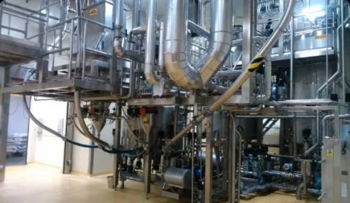
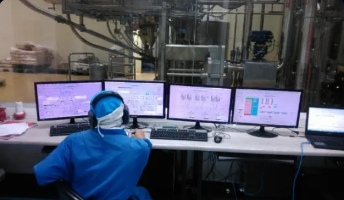
Key Features
Key Features
Automated batch recipe execution
PLC & SCADA integration
Real-time production monitoring
Batch history & traceability
Secure recipe management
Optimized phase transitions
Benefits
Benefits
Improve production efficiency
Ensure consistent product quality
Reduce batch cycle time
Minimize operator errors
Lower operational costs
Increase return on investment
Want to know more about Batch Control?
Contact the Foster Engineering team for advice, system architecture design and a project quotation.
Contact our engineers →Overview
System Overview


Key Features
Key Features
Advanced process automation
Controls motors and valves to work together automatically.Secure recipe management
Enter recipes and manage access rights with strong encryption.PLC & SCADA integration
Links field data and records it to the central database in real time.Real-time process monitoring
Easy-to-read graphics detect faults so the process can be corrected immediately.Smart alarm management
Alerts abnormal production conditions (temperature, pressure, weight) at once on screen and in the LINE group.Benefits
Benefits
Improve production efficiency
Cuts working time and saves plant energy.Reduce human error
Automatic control of operating conditions prevents mistakes from wrong inputs.Protect confidential recipes
Only senior staff can view and edit mixing recipes.Increase product consistency
Keeps flavor, color and product properties identical in every batch.Want to upgrade your Process Control?
Contact the Foster Engineering team for advice, system architecture design and a project quotation.
Contact our engineers →Overview
System Overview
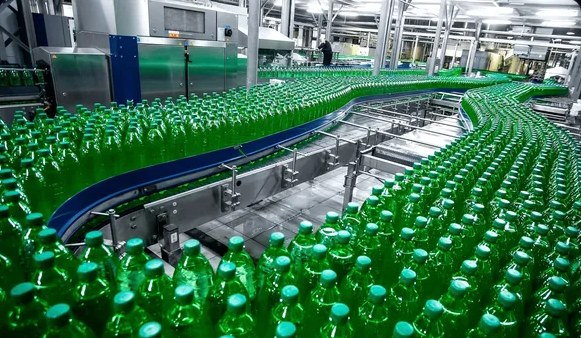

Key Features
Key Features
Real-time production dashboard
Shows order progress and production status at all times.Machine monitoring
Links the running status (Run/Idle/Stop) of main machines.Production analytics
Calculates raw-material usage and variance, and logs data for improvement.KPI reporting
Summarizes efficiency, output rate and loss percentage per shift or order.Performance tracking
Trace raw-material weights and production cycle times transparently.Benefits
Benefits
Increase productivity
Operators see bottlenecks and can improve the process right away.Improve production quality
Real-time weight tracking screens prevent weighing errors in ingredients.Reduce downtime
Fast problem reporting through signals lets the maintenance team respond at once.Enable faster decision-making
Managers and supervisors get accurate summaries on tablets and dashboard screens.Want to monitor your line in real time?
Contact the Foster Engineering team for advice, system architecture design and a project quotation.
Contact our engineers →Overview
System Overview


Key Features
Key Features
AI-based mixing prediction
AI-based mixing predictionReal-time parameter monitoring
Real-time process monitoringRaw-material and chemical quality prediction
Quality prediction modelingEarly defect detection during the production cycle
Early defect detectionProduction statistics analysis and summary
Production data analyticsBenefits
Benefits
Reduce QC inspection time
Reduce QC inspection timeKeep recipe quality consistent
Improve product consistencyCut damaged raw materials and waste
Minimize defective productsRaise output and overall efficiency
Increase production efficiencySupport data-driven decisions
Support data-driven decision makingWant to know more about Intelligence Mixer?
Contact the Foster Engineering team for advice, system architecture design and a project quotation.
Contact our engineers →Overview
System Overview
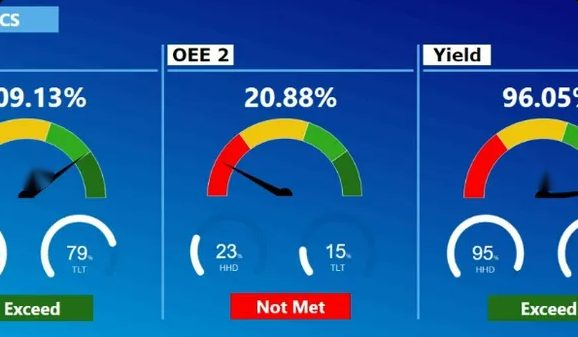

Key Features
Key Features
Real-time OEE dashboard
Real-time OEE dashboardMachine status monitoring
Machine availability monitoringMachine performance analysis
Performance analysis dashboardDowntime recording and cause tracking
Downtime tracking & categorizingPer-shift / daily production reports
Production reporting systemKPI visualization dashboard
KPI visualization panelsBenefits
Benefits
Better return and equipment utilization
Improve equipment utilizationShorter downtime and clearer causes
Reduce machine downtimeHigher output on the production line
Increase production outputSupport continuous improvement
Support continuous improvementFaster operational decisions
Make faster operational decisionsWant to know more about OEE?
Contact the Foster Engineering team for advice, system architecture design and a project quotation.
Contact our engineers →Overview
System Overview


Key Features
Key Features
Real-time inventory status tracking
Real-time inventory tracking: count stock anywhere, anytime.Smart ROP & EOQ calculation
Automatically calculates the reorder point and most economical order quantity from real usage statistics.Low raw-material alert system
Automated stock alerts: notifies purchasing when stock falls to the critical point.Integration with the pre-weight system
Material pre-weight integration: enters recipes and deducts warehouse materials by the actual weight used on the line.Inventory reporting and in-depth analysis
Inventory reporting: summary reports, best-selling items and advance raw-material demand forecasts.Benefits
Benefits
Fewer raw-material and product shortages
Reduce stock shortages: be sure every production run has materials ready.Better cash circulation in the warehouse
Optimize inventory investment: less money tied up in unnecessary stock.Better warehouse work efficiency
Improve warehouse efficiency: manage walking routes and storage space well.More accurate stock counting
Increase inventory accuracy: fewer manual recording errors thanks to automatic weighing.Lower material and product storage costs
Lower storage costs: control storage-space and product-deterioration expenses.Want to know more about Inventory Management?
Contact the Foster Engineering team for advice, system architecture design and a project quotation.
Contact our engineers →Overview
System Overview
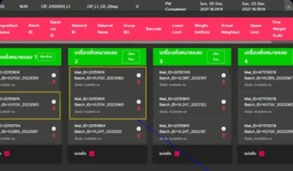
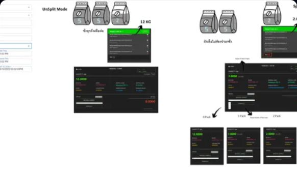
Key Features
Key Features
Support for many pack sizes
Multi pack-size support: handles different package sizes and weighing quantities flexibly.Automated pre-weight process
Automated pre-weight process: controls the weighing steps directly through the software.Full production-process integration
Production integration: connects scale data to the SCADA and MES systems.Recipe management system
Recipe management: securely controls and maintains the mix recipe and weight of every pack.Weight accuracy verification system
Weight verification: instant alert when the weight falls outside the accepted tolerance.Benefits
Benefits
Greater production flexibility
Increase production flexibility: quickly adapt to changing product sizes in the market.Fewer raw-material weighing errors
Reduce weighing errors: keep ingredient quality consistent and cut waste from wrong weighing.Better packaging-warehouse efficiency
Improve packaging efficiency: speed up production and cut repeated steps in the packing process.Support diverse product formats
Support diverse product formats: increase the ability to run branding and distribute packs in different sizes.Want to know more about Pre-Weight?
Contact the Foster Engineering team for advice, system architecture design and a project quotation.
Contact our engineers →Overview
System Overview

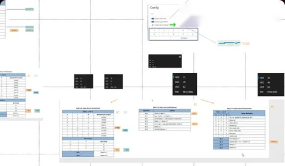
Key Features
Key Features
Multiple operating modes
Multi-mode operation: supports fully automatic, semi-automatic and manual dispensing.Easy weighing setup through software
Software configurable workflow: change queue order and materials easily without writing new PLC code.Accurate automatic raw-material dispensing
Automatic weighing: dispenses raw materials and compensates the weight to stay within the accepted parameter tolerance.High weighing and mixing flexibility
Production flexibility: switch queue size and material types to support many product brands.Recipe management system
Recipe management: key in recipes, set accepted deviation thresholds and view traceability reports.Benefits
Benefits
Shorter system setup time
Reduce setup time: change queues, jobs and recipes quickly and cut line downtime when switching shifts.More accurate recipe weights
Increase weighing accuracy: reduce human error with automatic weighing and dispensing.Greater ability to switch modes
Increase production flexibility: switch workflows and recipes across many weighing processes instantly.Easier production changeovers
Simplify production changes: cut paper and extra equipment by sending weighing jobs straight to the weighing-machine screen.Want to know more about this system?
Contact the Foster Engineering team for advice, system architecture design and a project quotation.
Contact our engineers →Overview
System Overview
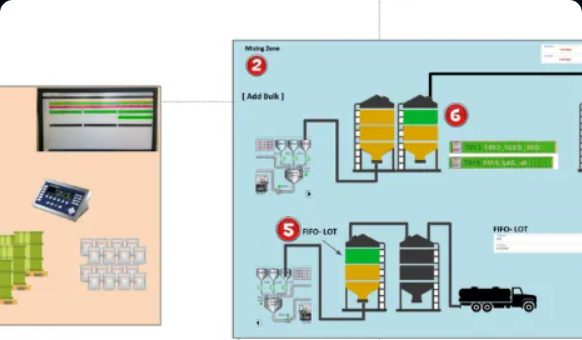
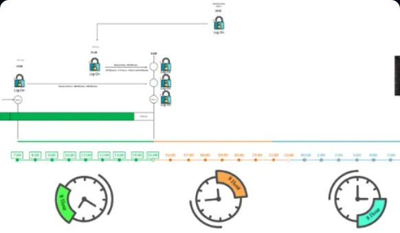
Key Features
Key Features
Production formula management system
Formula management: controls production formulas and raw materials, and alerts the quantity needed for automatic weight compensation.Real-time warehouse data integration
Inventory integration: deducts stock and checks raw-material balances as soon as weighing and recipe feeding finish.Raw-material tank farm management
Tank farm management: monitors level, pressure and pump/valve operation in the main raw-material tanks.Shift and production task management
Shift task management: assigns and tracks the progress of each shift's work systematically.Real-time production line tracking
Production tracking: follows order status, weighing and liquid raw-material dispensing.Raw-material traceability system
Material traceability: confirms lot and raw-material codes by barcode to prevent wrong-feed mixing errors.Benefits
Benefits
Centralize production data in one place
Centralize production operations: monitor, track and report on every system from a single dashboard.Better stock-management accuracy
Improve inventory accuracy: reduce discrepancies and losses of main raw materials and liquid chemicals.Fewer manual work steps
Reduce manual processes: move to a paperless system and cut document workload.Maximum operating efficiency
Increase operational efficiency: helps warehouse, purchasing and production teams coordinate data seamlessly.Want to know more about this system?
Contact the Foster Engineering team for advice, system architecture design and a project quotation.
Contact our engineers →Overview
System Overview
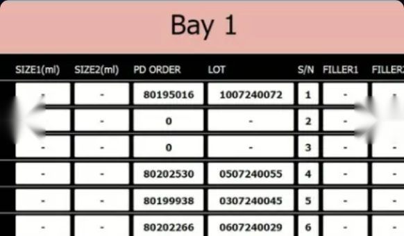

Key Features
Key Features
SAP ERP management system integration
SAP ERP integrationAutomatic production order synchronization
Production order synchronizationDetailed tracking of actual raw-material use
Material consumption trackingRecipe management and recording system
Recipe management integrationReal-time production status reports
Real-time production statusReal-time warehouse stock synchronization
Inventory synchronizationBenefits
Benefits
Fewer manual data-entry steps
Eliminate manual data entryBetter production-planning quality
Improve production planningHigher raw-material stock accuracy
Increase inventory accuracyMore transparency in the production process
Enhance process visibilitySupports end-to-end plant operations
Support end-to-end manufacturing operationsWant to know more about SAP Integrated Mixing Process?
Contact the Foster Engineering team for advice, system architecture design and a project quotation.
Contact our engineers →Overview
System Overview

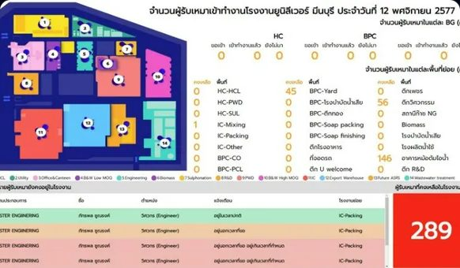
Key Features
Key Features
Contractor registration system
Contractor registration systemWork permit management
Work permit management workflowTemporary visitor registration system
Visitor registration & trackingSafety regulation compliance checks
Safety training compliance checksDocument storage and verification system
Document verification databaseAccess control system integration
Access control system integrationBenefits
Benefits
Higher workplace safety
Improve workplace safetyLighter document workload for administrators
Reduce administrative workloadCompliance with safety laws and regulations
Ensure regulatory complianceDetailed tracking and history of contractors
Track contractor activitiesStronger perimeter security of the area
Enhance operational securityWant to know more about the Contractor Management System?
Contact the Foster Engineering team for advice, system architecture design and a project quotation.
Contact our engineers →Overview
System Overview
Key Features
Key Features
Refrigeration system control
Refrigeration control: keeps the main refrigeration units at a steady, accurate temperature level.Industrial air-conditioning system
HVAC automation: intelligently adjusts pressure, humidity and airflow direction in production and chemical-separation rooms.Real-time condition monitoring
Process monitoring: reports temperature, pressure and chemical levels, and keeps 24-hour historical data.Higher energy-use efficiency
Energy optimization: controls compressor speed and fan drive through VSD for maximum power savings.SCADA control system integration
SCADA integration: graphic animation of the production process for easy inspection, with an alarm record every time the system faults.Benefits
Benefits
Better energy savings
Improve energy efficiency: cut electricity costs by running refrigeration units according to the real load.Lower operating costs
Reduce operating costs: reduce wear on large compressors by keeping the load suitably steady.Higher plant stability and quality
Enhance plant reliability: confident control of pressure and temperature in hazardous areas.Higher control-system availability
Increase system availability: reduce petrochemical plant stoppages with an automatic redundant-system architecture.Want advice on a Petrochemical Automation project?
Contact the Foster Engineering team for advice, system architecture design and a project quotation.
Contact our engineers →Overview
System Overview

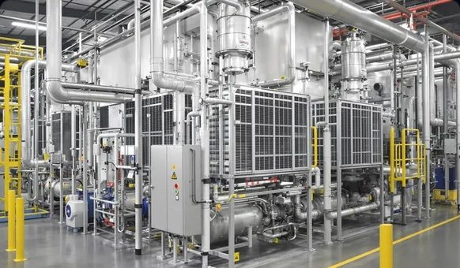
Key Features
Key Features
Stable temperature control
Temperature control: keeps the temperature exactly to the mixing recipe and strict storage requirements.Energy-saving automation
Energy-saving automation: tunes PID values and stages compressor sets to match the real load.Main equipment monitoring
Equipment monitoring: tracks oil pressure, motor current signals and operating levels.Predictive maintenance system
Predictive maintenance: analyzes statistics of pressure deviation to warn before parts fail.Emergency safety alarm system
Alarm notification: instantly warns of abnormal temperature and high/low pressure for plant safety.Benefits
Benefits
Real, lower electricity costs
Reduce energy costs: an algorithm varies energy use in step with the compressor load.Keep product quality along the line
Improve product quality: prevents raw-material deterioration from temperature swings.Extend main-equipment service life
Extend equipment lifetime: prevents repeated motor inrush starts and cuts accumulated wear.Lower urgent maintenance costs
Lower maintenance expenses: avoid severe machine breakdowns by detecting abnormalities early.Want to upgrade your industrial refrigeration system?
Contact the Foster Engineering team for advice, system architecture design and a project quotation.
Contact our engineers →Overview
System Overview
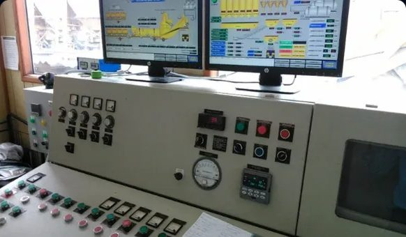

Key Features
Key Features
PLC system migration
PLC migration: upgrades programs and replaces old PLC hardware with the latest safe, stable generation.SCADA system upgrade
SCADA upgrade: a completely new HMI look, trend/graph analysis and instant alarms.Modern control system
Control system modernization: integrates industrial network protocols (OPC UA, MQTT, Modbus TCP).Seamless replacement of old systems
Legacy system replacement: plans the cutover to save time and reduce the risk of machine stoppage.Control system performance tuning
Performance optimization: tunes PID loops and data communication so the system responds faster and more accurately.Benefits
Benefits
Extend the life of existing machinery
Extend equipment lifecycle: revive the control system so the plant keeps running efficiently for years.Higher stability and reliability
Improve plant reliability: reduce unplanned downtime caused by failures of old equipment.Support future production expansion
Support future expansion: an upgraded architecture makes long-term connection and equipment expansion easy.Lower long-term maintenance costs
Reduce maintenance costs: avoid buying obsolete parts that are expensive and hard to find.Want to revamp or upgrade your control system?
Contact the Foster Engineering team for advice, system architecture design and a project quotation.
Contact our engineers →Overview
System Overview
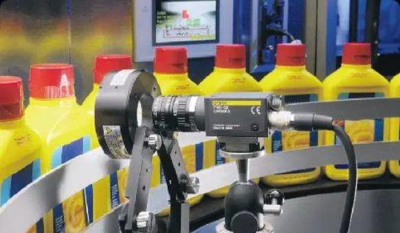

Key Features
Key Features
Safety monitoring system
Safety monitoring: checks and cuts off automatic machinery immediately in an emergency.Alarm analysis system
Alarm management: sorts alarm signals by critical level to prevent alarm floods.Fault analysis tools
Diagnostic tools: find the root cause of faults in signal paths and hardware for fast maintenance.Production quality monitoring system
Quality monitoring: analyzes weights and mixing parameters to keep every batch to the same standard.Historical production data analysis
Production analytics: reports good/bad output and alarm statistics for planning to prevent faults in advance.Benefits
Benefits
Improve workplace safety
Improve workplace safety: reduce serious accidents to staff with safety interlocks that pass thorough testing.Reduce production waste and scrap
Reduce production waste: catch recipe errors at the mixing stage and stop the process before raw material is lost.Better troubleshooting efficiency
Enhance troubleshooting: pinpoint faults accurately with graphics simulating the electrical diagram.Higher product quality and consistency
Increase product quality: control and record weighing history to prevent deviation and deliver top-standard products.Want to upgrade your alarm and production-line safety system?
Contact the Foster Engineering team for advice, system architecture design and a project quotation.
Contact our engineers →Overview
System Overview
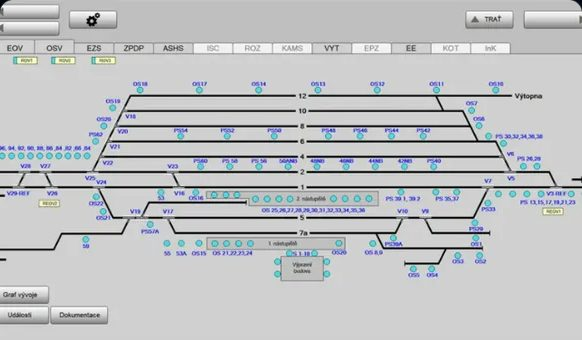

Key Features
Key Features
Automatic train operation control
Train automation: sets speed programs and controls acceleration/braking according to route signal aspects.Central SCADA overview display
SCADA integration: interactive diagrams show the position of every train and power-supply station at once.Hydraulic and track system control
PLC control: links and switches the track-switch sets at junctions accurately.Real-time traffic tracking
Traffic monitoring: shows running times, checks delays and manages the automatic train queue timetable.Safety management and interlocking
Safety management: cuts operation immediately when an overlap occurs on the route or the train control deviates beyond limits.Benefits
Benefits
Improve railway safety
Improve railway safety: confidence from SIL-level standards, preventing errors that cause collisions or train accidents.Higher service efficiency
Increase operational efficiency: manage queues and set run times more tightly while keeping safe distances.Less human intervention in physical control
Reduce manual intervention: cut errors from operator fatigue with a high-level autopilot system.Raise service reliability and running stability
Enhance service reliability: passengers get convenience, punctuality and no worry about sudden rail-system faults.Want to design a rail signalling control system?
Contact the Foster Engineering team for advice, system architecture design and a project quotation.
Contact our engineers →Overview
System Overview

Key Features
Key Features
Centralized monitoring system
Centralized monitoring: control and track the status of all facilities from the main control room.Complete railway SCADA system
Railway SCADA: shows power switching, track and station escalator/elevator status accurately.Electric train (APM) operating system integration
APM integration: receives train-stop signal data and the automatic platform-screen-door system.Fault alarm management system
Alarm management: sorts critical alarms, hazard signals and fault statistics by station.Remote control and commanding
Remote control: command ventilation fans, fire sprinklers and emergency power switches instantly from the SCADA room.Benefits
Benefits
Higher transport reliability
Improve transportation reliability: confident that the rail power-supply and support systems work throughout service.Raise passenger safety
Enhance passenger safety: respond to fire or power-outage emergencies immediately from the SCADA room.Less maintenance downtime
Reduce maintenance downtime: pinpoint the fault location so engineers can fix it immediately.Higher operating efficiency
Increase operational efficiency: manage facilities across many stations centrally and systematically.Want to design a SCADA system for railway infrastructure?
Contact the Foster Engineering team for advice, system architecture design and a project quotation.
Contact our engineers →Overview
System Overview
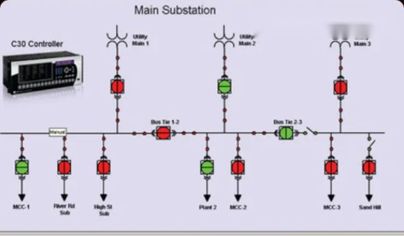

Key Features
Key Features
Real-time energy monitoring system
Energy monitoring: pulls power parameters from meters and records real-time history.SCADA dashboard status display
SCADA dashboard: easy-to-read graph simulations show current, frequency and phase status.Power quality analysis system
Power analysis: detects harmonic distortion and voltage swells/sags to prevent outages.Automatic power-usage reports
Consumption reporting: summarizes energy cost by shift and by day to compare usage statistics.Overload alarm system
Alarm notification: sends instant alerts to the screen and smartphone when current exceeds the set threshold.Benefits
Benefits
Lower accumulated energy costs
Reduce energy costs: an algorithm distributes load to keep peak electricity demand from exceeding the threshold.Improve power-distribution efficiency
Improve power efficiency: analyzes bottlenecks and power-loss points in cables so they can be fixed efficiently.Support the plant's sustainability goals
Support sustainability goals: cut carbon footprint in line with international energy-saving policy.Data-driven electrical energy management
Enable data-driven energy management: use peak-demand graph history to improve and adjust machine run schedules accurately.Interested in cutting energy costs with the Energy Monitoring System?
Contact the Foster Engineering team for advice, system architecture design and a project quotation.
Contact our engineers →Overview
System Overview
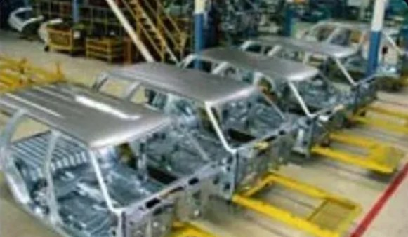

Key Features
Key Features
Automatic machine control system
Machine automation: writes and develops control sets for continuous operation without constant supervision.Precision motion control
Motion Control: tunes Servo Motors and Stepping Motors to move exactly to the target position.Standard-structure PLC programming
PLC programming: develops easy-to-understand, well-structured program code that meets international specifications.Real-time monitoring
Real-time monitoring: reports and displays workpiece specs, speed and actual weight on screen.Complete safety system
Safety integration: connects emergency-stop circuits and safety light curtains to the PLC to prevent accidents instantly.Benefits
Benefits
Increase machine reliability
Increase machine reliability: runs smoothly with no worries about control-software errors.Reduce machine downtime
Reduce downtime: problems are reported quickly through the signal system so the maintenance team can fix them immediately.Improve production accuracy
Improve operational accuracy: controls workpiece quality and precision to a consistent standard.Enhance production efficiency
Enhance production efficiency: speeds up workpiece production and reduces losses during machine set-up.Need to develop a control system for an OEM machine?
Contact the Foster Engineering team for advice, system architecture design and a project quotation.
Contact our engineers →Overview
Service Overview
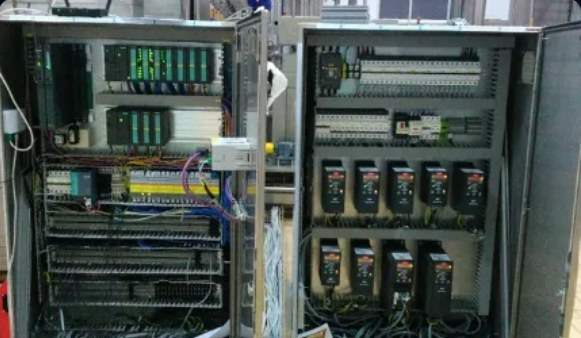
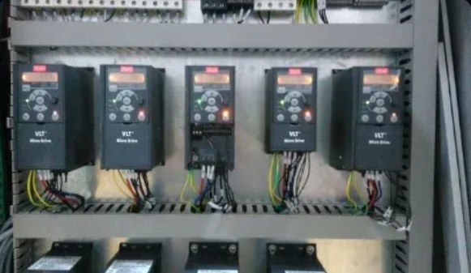
Key Features
Key Features
Custom control panel assembly
Custom control panel assembly: sizes the panel, mounting positions and ventilation fans to the site specification.Pre-delivery system testing (FAT)
Factory Acceptance Test: simulates real power-up and checks I/O signals and relay functions.Detailed wiring-point inspection
Point-to-point wiring inspection: uses a multimeter to verify 100% of circuit continuity and signal-wire connections.Electrical quality assurance and control
Quality assurance: uses industrial-standard brand equipment (Schneider, Siemens, Phoenix Contact).Site commissioning test support
Site commissioning support: our engineering team supports readiness to connect to the machine and start the first production run safely.Benefits
Benefits
Confidence in reliability and safety
Ensure system reliability: prevents electrical faults caused by signal interference by clearly separating control wiring from power wiring.Reduce on-site installation time
Reduce installation time: easy installation and wiring through a terminal-block layout with clearly marked wire ends.Improve operator safety
Improve operational safety: fully enclosed panels with an IP rating, resistant to dust, water spray and mechanical impact.Deliver panels and systems to a global standard
Deliver proven industrial performance: every panel goes through detailed inspection by specialist engineers before handover.Need to build an industrial electrical control panel?
Contact the Foster Engineering team for advice, system architecture design and a project quotation.
Contact our engineers →Overview
System Overview

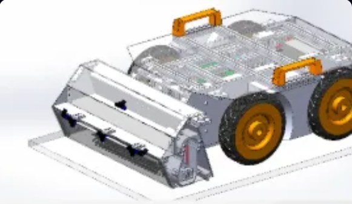
Key Features
Key Features
Full-circuit prototype development
Prototype development: co-designs the frame, measuring devices and electrical diagrams for the new system.Advanced PLC programming
PLC programming: develops consistent control logic and tunes the automation system through a computer.Control panel design
Control panel design: selects the panel and switching devices and organizes the electrical wiring to safety standards.Complex motion control
Motion control: writes programs to control Servo Motors and Inverters in precise motion processes.On-site inspection and testing system
System testing: runs the system empty (Dry Run) and with real workpiece loads (Wet Run) to resolve engineering problems before delivery.Benefits
Benefits
Accelerate R&D and product development
Accelerate product development: reduces R&D downtime with a design team that has dedicated electrical and software expertise.Reduce control engineering risks
Reduce engineering risks: catches electrical and program-logic errors early, before the production line goes live.Increase confidence in design results
Improve design validation: FAT documentation and test statistics comparing performance against standard values.Ready to support the step to real production lines
Support production readiness: hands over engineering drawings, program code and operating manuals for scaling up to mass production.Need to design a control cabinet for a machine prototype?
Contact the Foster Engineering team for advice, system architecture design and a project quotation.
Contact our engineers →Address
FOSTER ENGINEERING CO.,LTD
84/212 Moo.12 Suwinthawong Rd., Sansab
Minburi Bangkok 10510 Thailand